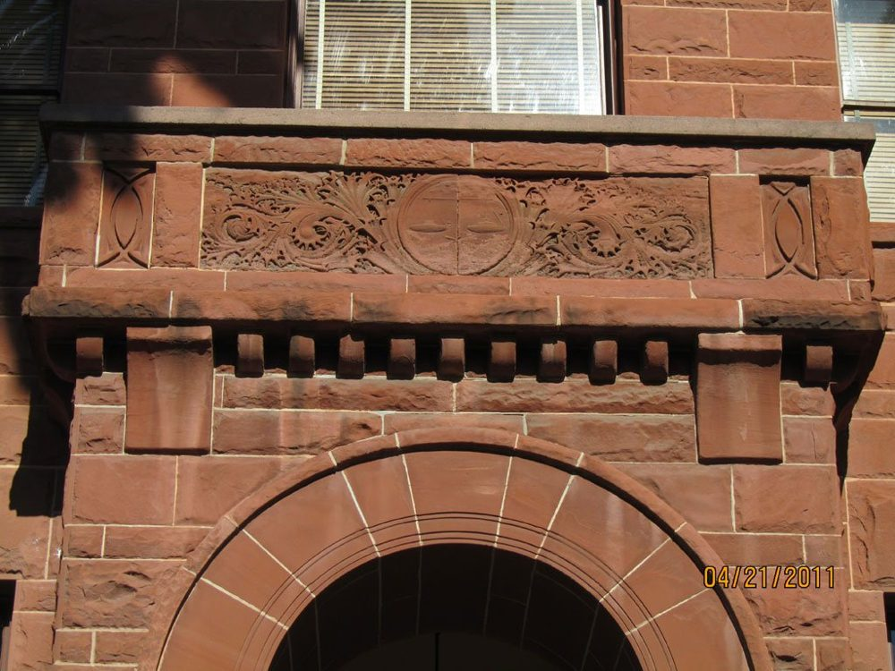
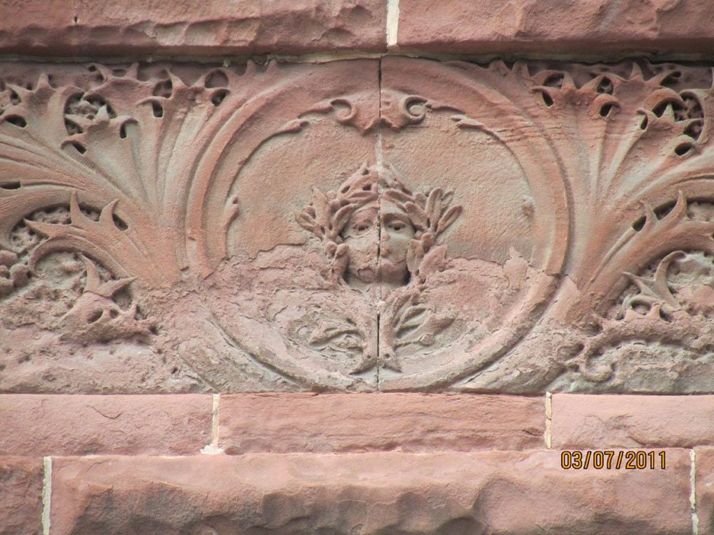
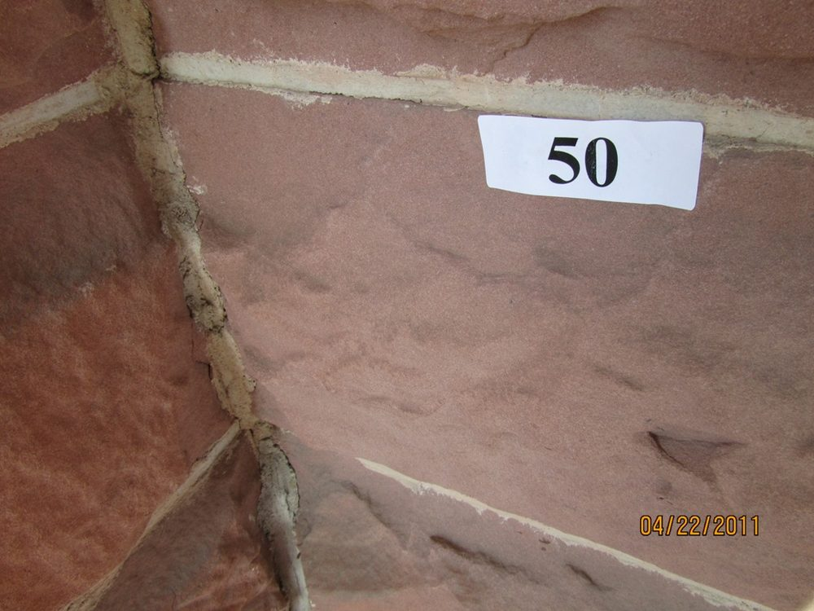
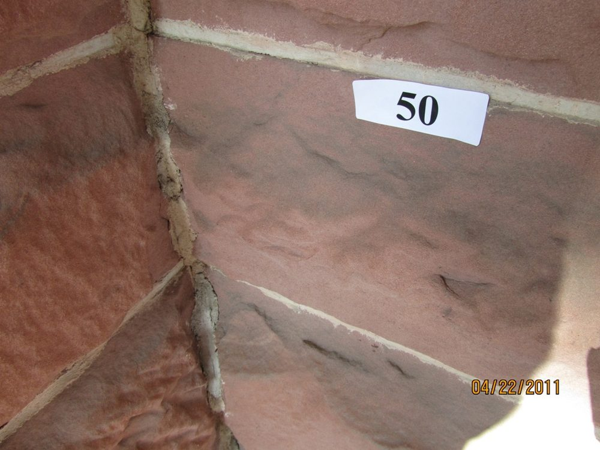
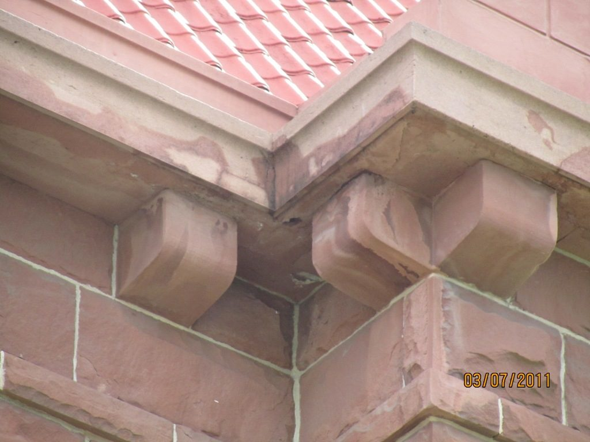
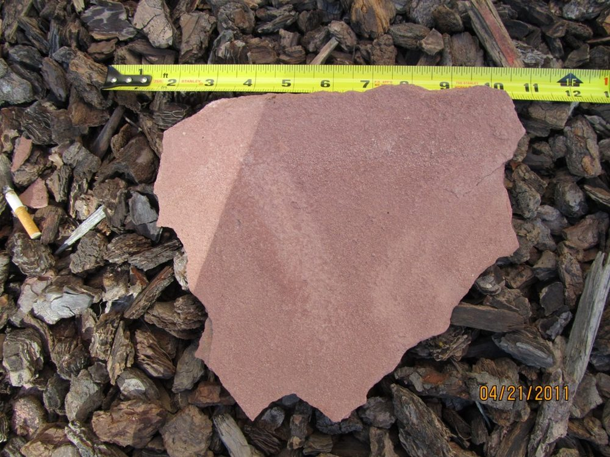

The Red Arizona Sandstone Old Santa Ana Courthouse is one of Orange County's most enduring treasures. Yet more than one hundred years of exposure to weather, earthquakes, pollution, and substandard maintenance finally resulted in the failure of a 20-lb. portion of a corbel at the roof-line.
PALEY Stone & Tile Forensics conducted an analysis of the cause of failure and the repairs needed to prevent further degradation, in accordance with standards outlined by the US Department of the Interior.
The building's material is the starting point for everything that follows. Red Arizona sandstone is a sedimentary rock of coarse quartz grains bonded by minerals deposited during formation, and its durability depends entirely on that cementing material. This stone carries a high concentration of calcite, one of the more soluble minerals — so despite appearing dense, it is porous, moisture travels through it by capillary action, and it erodes quickly under repeated exposure to water and acidic pollutants. Grains release from the surface under nothing more than a soft-bristled brush, and when treated with de-ionized water the cementing agent washes away. That single fact governs every cleaning, consolidation, and repair decision on the building.
To determine whether other corbels along the same roof-line posed the same risk, four data points for soundness were established: staining, hollowness, spalling, and cracking. Where a majority of the four appear together at a corbel, the probability of collapse is high. The fallen corbel exhibited all four. Applying those criteria across the building identified approximately 28 corbels, 34 cracks, 48 window sills, and 36 areas requiring patching. During the inspection period itself, another delaminated sheet fell from the West wall.
Infrared testing confirmed that the East wall retains significantly more moisture than the West — it gets less sun and is shaded by taller trees — which explains why deterioration and staining are more extensive there. Water migration behind the East entry column was flagged for leak detection testing rather than assumed.
The resulting program pairs building-wide maintenance with targeted repair. Cleaning proceeds in three steps — dry brushing and low-pressure vacuuming, then a pH-neutral stone soap and de-ionized water applied in areas no larger than fifty square feet, then removal of irreparable spalled material. Consolidation with breathable alkylalkoxysilane and alkylsilicate products strengthens the stone's bonding materials without altering its appearance, verified by a water-repellency test fourteen days after full cure. Six repair techniques are applied individually or in combination: removal of loose layers, adhesive grout injection into reparable fissures, patching of larger voids, stainless steel rodding of unsound sills and corbels, re-pointing, and reconstruction of distorted architectural features. Patching and grout mixtures are formulated from pulverized sandstone and iron oxide colorants so repairs blend with the building's existing patina.
The work is scheduled for the drier months and takes roughly three months across all four elevations. Beyond the project itself, the report recommends that facilities staff inspect drainage, leaks, and irrigation overspray on a 24-month cycle, and that Red Arizona sandstone be sourced and stored for future repairs.
James Paley holds a nationally recognized Historic Preservation Certificate from the Campbell Center for Historic Preservation Studies, Mt. Carroll, IL.





